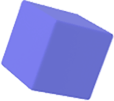
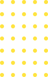
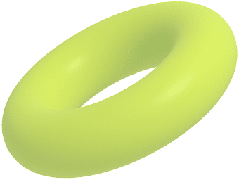

USE CASE
언제 어디서나
레이즈미
언제 어디서나 레이즈미의 기술을 활용하세요
실시간으로 고객의 상태를 확인하고 원활한 화상상담 진행이 가능합니다.
레이즈미와 함께하는 화상상담, 이런 것도 가능해요!
2
3
4
5

- 상담 중 고객 스스로 인지하지 못한 관심사나 요구사항을 카운슬러가 역으로 제안드릴 수 있습니다.
- 고객의 심리상태와 집중도를 반영한 데이터를 기반으로 원활한 상담이 가능합니다.
- 누적된 상담 데이터를 이용해 상품의 개선 및 카운슬러 트레이닝에 활용할 수 있습니다.
- 

- 
- 
- 